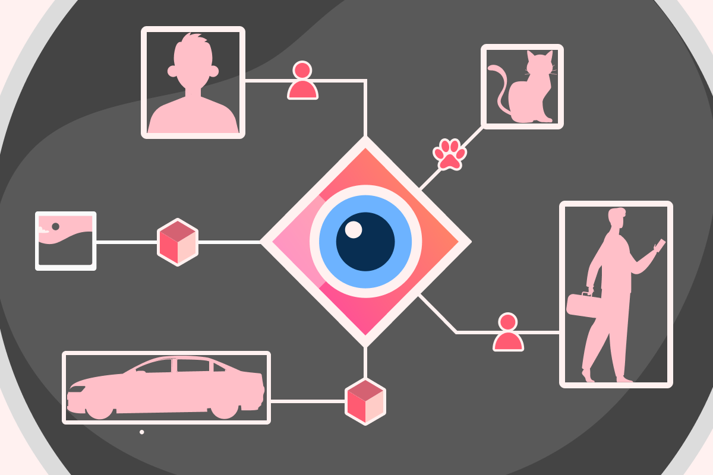

Сбор данных
Собираем данные из ВКонтакте, Twitter, Instagram и LinkedIn. Используем API для разработчиков и полупубличные интерфейсы.
Лаборатория проводит регулярный сбор данных с сайтов в зонах .ru и .рф (5 500 000 хостов). Робот решает капчи и обходит блокировки.
В России действует 8-ФЗ, государство публикует закупки, результаты выборов, статистику внешней торговли. Мы следим за источниками открытых данных, используем их в исследованиях.
Лаборатория проводит регулярный сбор данных с сайтов в зонах .ru и .рф (5 500 000 хостов). Робот решает капчи и обходит блокировки.
В России действует 8-ФЗ, государство публикует закупки, результаты выборов, статистику внешней торговли. Мы следим за источниками открытых данных, используем их в исследованиях.

Компьютерное зрение
Мы занимаемся исследованиями в области распознавания изображений, публикуемся на топовых научных конференциях (CVPR, ICPR, ACCV).
Лаборатория разрабатывает решения для любой задачи, связанной с компьютерным зрением, начиная от классификации, сегментации и детекции, до стайл трансфера, генерации изображений по промту, few-shot обучению.
Умеем масштабировать наши решения, развертывать их и разрабатывать соответствующую инфраструктуру, позволяя клиентам начинать пользоваться ими из коробки.
Лаборатория разрабатывает решения для любой задачи, связанной с компьютерным зрением, начиная от классификации, сегментации и детекции, до стайл трансфера, генерации изображений по промту, few-shot обучению.
Умеем масштабировать наши решения, развертывать их и разрабатывать соответствующую инфраструктуру, позволяя клиентам начинать пользоваться ими из коробки.
Обработка естественного языка
Лаборатория разрабатывает и поддерживает открытые инструменты для работы с естественным русским языком. Парсер именованных сущностей извлекает из текста имена, даты, адреса и названия организаций.
Данные, собранные из разных источников, приводим к нормальной форме и объединяем.
Используем современные Transformer-like модели с более чем 1B параметров для решения задач генерации текста в нужном домене и машинном переводе, а также многих других.
Данные, собранные из разных источников, приводим к нормальной форме и объединяем.
Используем современные Transformer-like модели с более чем 1B параметров для решения задач генерации текста в нужном домене и машинном переводе, а также многих других.